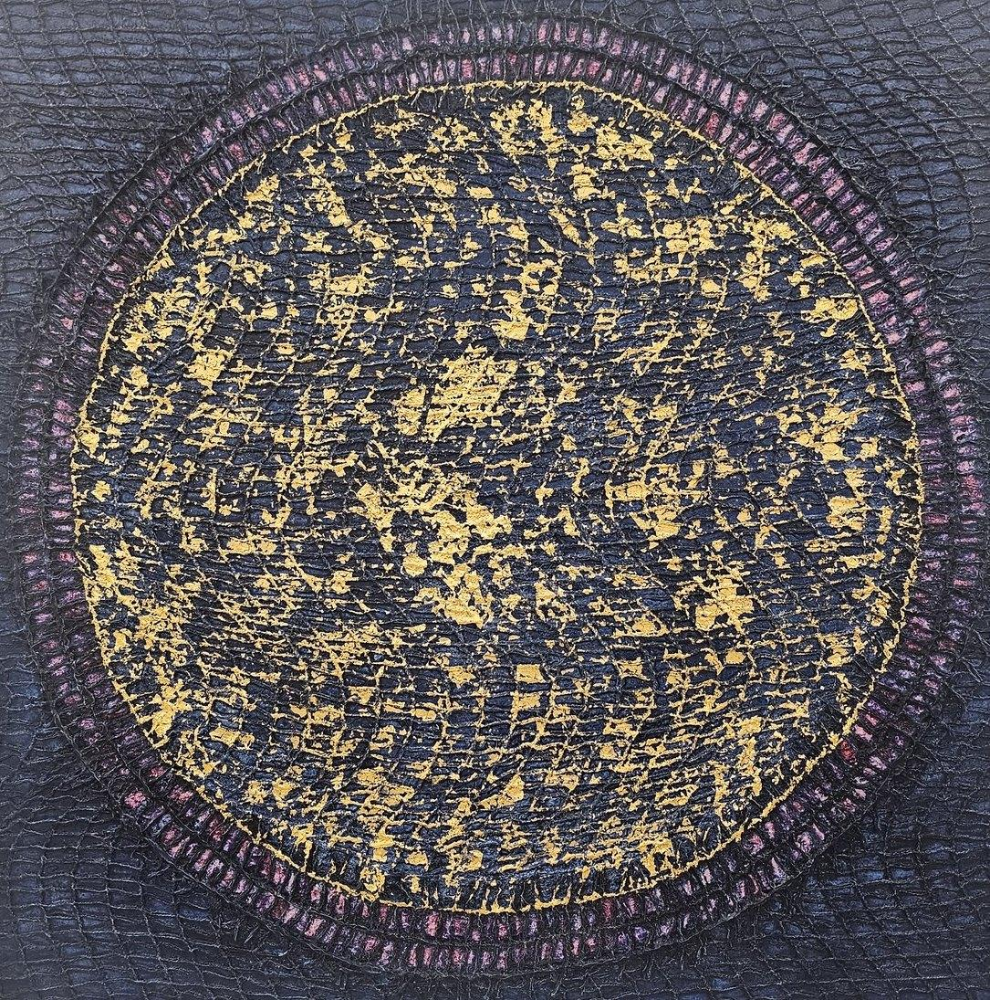

BLUE OCEAN 2663#109
캔버스에 혼합재료 (24K 금박, 한지, 천연 옻칠)
짙은 밤바다 같은 화면에 커다란 원이 떠 있고, 그 안에 금박이 별빛처럼 흩어져 있습니다. 원의 가장자리를 두른 결이 고요한 경계를 만듭니다.
연작 · BLUE OCEAN
바다 위, 바다 아래, 그리고 어제와 오늘. 시시각각 달라지는 바다의 소리와 빛깔을 인간 삶의 감정으로 다시 읽습니다.
작품가와 소장 가능 여부, 액자 · 운송 · 공간에 맞는 크기는 문의 시 안내해 드립니다.